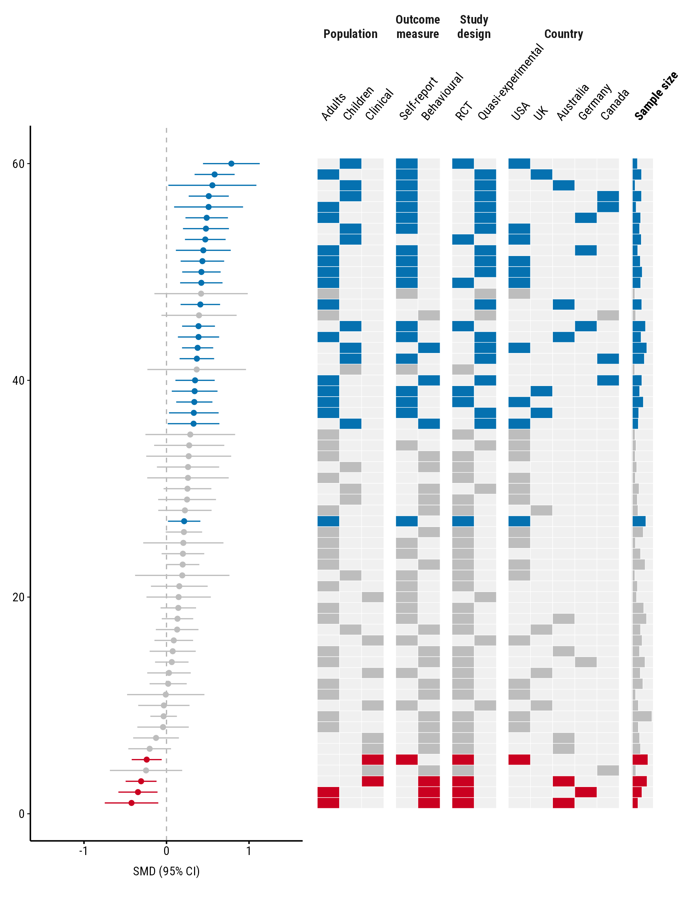
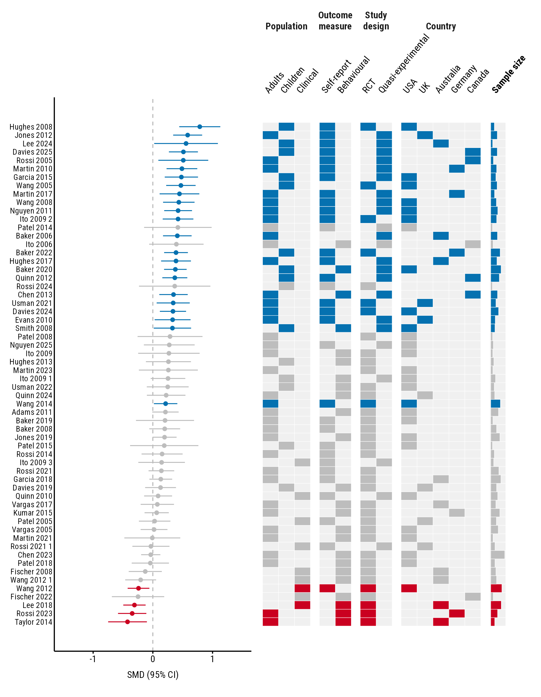
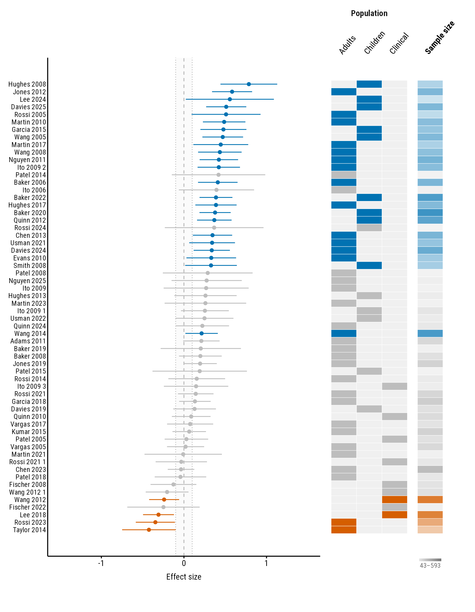

By default the forest plot sits above the heatmap and each study is a
column. With many studies the plot gets wide.
orientation = "vertical" turns it on its side, like a
traditional forest plot: each study is a row, the largest effect at the
top, and the heatmap is on the right with one column per level. A long
meta-analysis then grows downwards, which suits scrolling and portrait
pages. All the examples use the forestmap_example data that
comes with the package.
Turning the plot
plot_forestmap(
forestmap_example, "smd", vi = "vi",
moderators = c(
"Population" = "population",
"Outcome measure" = "outcome",
"Study design" = "design",
"Country" = "country",
"Sample size" = "n"
),
orientation = "vertical",
y_label = "SMD (95% CI)"
)
Each property’s levels are labelled above their columns, and the
property’s name is centred above those. A numeric property, here sample
size, gets one column labelled with its name in bold, with bars growing
to the right. Long names are wrapped onto two lines when their columns
are narrow; put \n in a name to choose where it breaks,
e.g. "Outcome\nmeasure" = "outcome". This applies only to
the names above categorical columns: a numeric property’s name is its
column’s label, which stays on one line and ignores \n.
forest_height sets the forest plot’s share of the
width in this layout, e.g. forest_height = 0.5 for
equal halves.
Study names
Give a column of study names with study, and each row is
labelled:
plot_forestmap(
forestmap_example, "smd", vi = "vi",
moderators = c(
"Population" = "population",
"Outcome measure" = "outcome",
"Study design" = "design",
"Country" = "country",
"Sample size" = "n"
),
orientation = "vertical",
study = "study",
y_label = "SMD (95% CI)"
)
When labels are cramped
With many studies or levels, labels can crowd each other. Three settings help.
label_size sets the size, in points, of each kind of
label: study for study names, level for the
levels above the columns, and moderator for property names.
Any you leave out follow text_size.
level_angle sets the angle of the level labels, from 0
(flat) to 90 (upright). Upright labels take less width.
plot_forestmap(
forestmap_example, "smd", vi = "vi",
moderators = c(
"Population" = "population",
"Outcome measure" = "outcome",
"Study design" = "design",
"Country" = "country",
"Sample size" = "n"
),
orientation = "vertical",
study = "study",
label_size = c(study = 6, level = 7, moderator = 8),
level_angle = 90,
y_label = "SMD (95% CI)"
)Finally, give the plot more room when you save it. A vertical plot needs roughly 0.15 inches of height per study:
ggplot2::ggsave("forestmap.png", p, width = 7, height = 9.5, dpi = 300)Everything else works the same
Every other option works in the vertical layout too: palettes,
rope, null_value, max_levels, and
the styles and ranges of numeric properties. With
continuous_range = "end", the range key sits under the
property’s column:
plot_forestmap(
forestmap_example, "smd", vi = "vi",
moderators = c("Population" = "population", "Sample size" = "n"),
orientation = "vertical",
study = "study",
continuous_style = "tint",
continuous_range = "end",
rope = 0.1,
palette = "okabe_ito"
)